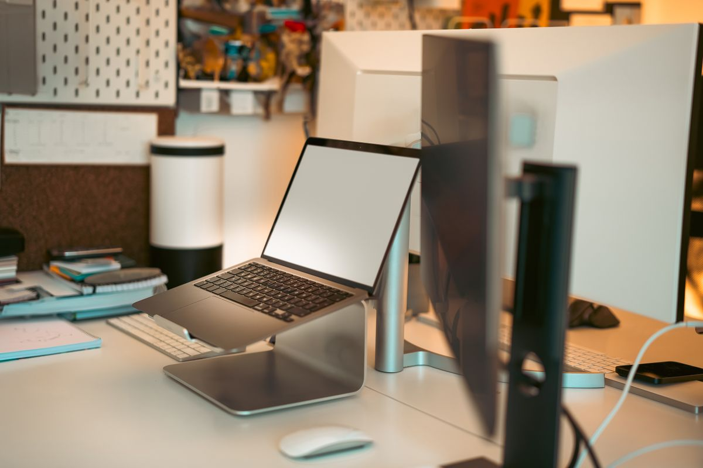
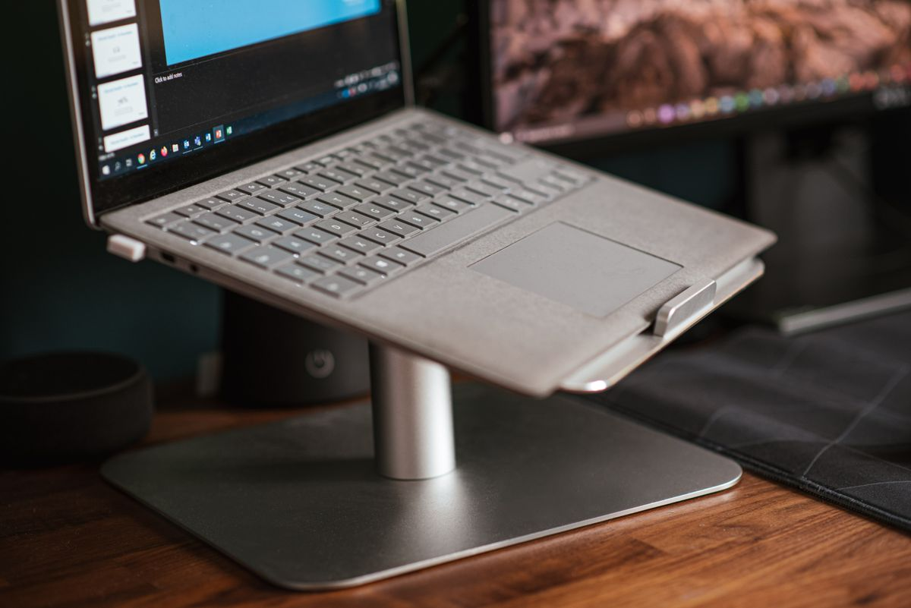
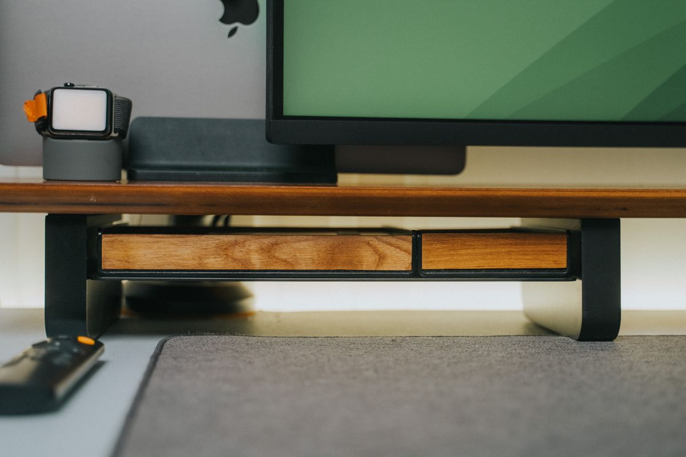
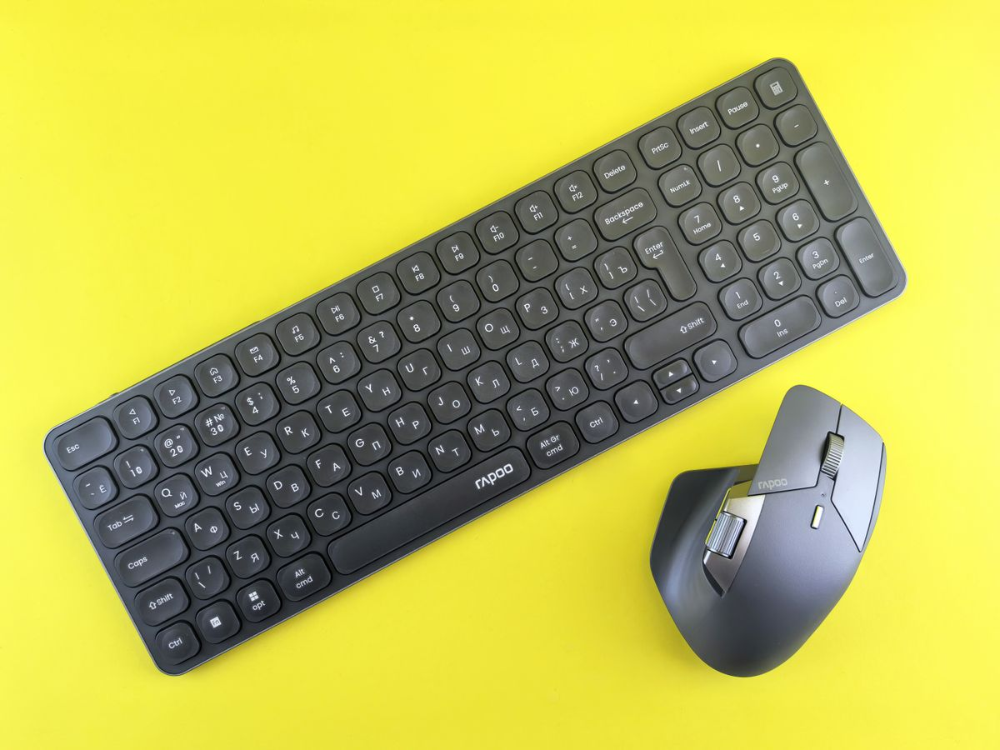

ที่วางแล็ปท็อปและขาตั้งจอ เลือกอย่างไรให้คอไม่ก้ม หลังไม่งอ 2026
ที่วางแล็ปท็อปและขาตั้งจอช่วยยกจอให้อยู่ระดับสายตา ลดอาการ Tech Neck ปวดคอบ่าไหล่ รวมประเภทและเกณฑ์เลือกซื้อตามหลัก ergonomics ซื้อผ่าน Shopee
อัปเดต กรกฎาคม 2026
หลายคนใช้แล็ปท็อปวางบนโต๊ะแล้วก้มคอมองจอทั้งวันโดยไม่รู้ตัวว่านี่คือต้นตอของอาการปวดคอ บ่า ไหล่ที่สะสมมานาน ปัญหานี้เกิดจากตำแหน่งจอที่ต่ำเกินไป ทำให้ต้องก้มศีรษะลงตลอดเวลาที่ใช้งาน ยิ่งทำงานนานหลายชั่วโมงต่อวัน ยิ่งสะสมความเสียหายต่อกระดูกสันหลังส่วนคอมากขึ้นเรื่อยๆ
ที่วางแล็ปท็อปและขาตั้งจอคืออุปกรณ์ที่ช่วยแก้ปัญหานี้โดยตรง ด้วยการยกระดับความสูงของหน้าจอให้อยู่ในระดับสายตา ซึ่งเป็นหลักการพื้นฐานของการจัดท่าทางทำงานแบบ ergonomics บทความนี้จะพาไปดูประเภทต่างๆ ของอุปกรณ์ยกจอ พร้อมเกณฑ์เลือกซื้อที่เหมาะกับแต่ละไลฟ์สไตล์การทำงาน
ทำไมความสูงของจอถึงสำคัญ
หลักการยศาสตร์ (Ergonomics) ที่ผู้เชี่ยวชาญด้านสุขภาพแนะนำคือ ขอบบนของจอควรอยู่ในระดับสายตาหรือต่ำกว่าเล็กน้อย เพื่อให้คอตั้งตรงตามธรรมชาติขณะมอง ไม่ต้องก้มหรือเงยศีรษะ
เมื่อจออยู่ต่ำเกินไปอย่างแล็ปท็อปที่วางราบบนโต๊ะ ศีรษะซึ่งมีน้ำหนักเฉลี่ยราว 4-5 กิโลกรัมจะโน้มไปข้างหน้า ทำให้กล้ามเนื้อคอและบ่าต้องทำงานหนักขึ้นหลายเท่าเพื่อพยุงศีรษะไว้ ยิ่งก้มมากยิ่งเพิ่มแรงกดที่คอมากขึ้นแบบทวีคูณ นี่คือสาเหตุของอาการที่เรียกกันว่า Tech Neck ซึ่งพบมากขึ้นเรื่อยๆ ในคนที่ทำงานกับหน้าจอเป็นหลัก
ประเภทของอุปกรณ์ยกจอที่ควรรู้จัก

1. ขาตั้งแล็ปท็อปแบบพับได้
เหมาะสำหรับคนที่ทำงานกับโน้ตบุ๊กเป็นหลักและต้องพกพาบ่อย ขาตั้งประเภทนี้มักทำจากอะลูมิเนียมน้ำหนักเบา พับเก็บได้ พกใส่กระเป๋าไปทำงานนอกสถานที่ได้สะดวก ขาตั้งแล็ปท็อปอะลูมิเนียมพับได้ ปรับมุมได้ 6 ระดับ เหมาะกับคนทำงานแบบ hybrid ที่สลับไปมาระหว่างบ้านและออฟฟิศ

2. ขาตั้งแล็ปท็อปแบบตั้งโต๊ะถาวร
สำหรับคนที่ทำงานที่โต๊ะเดิมประจำ ขาตั้งแบบถาวรมักมีโครงสร้างแข็งแรงกว่า รับน้ำหนักได้มากกว่า และมักดีไซน์ให้มีพื้นที่ระบายความร้อนให้เครื่องด้านล่างด้วย ขาตั้งแล็ปท็อปโครงเหล็กพร้อมช่องระบายอากาศ เหมาะกับคนที่ใช้แล็ปท็อปต่อจอแยกทำงานเป็นหลัก (clamshell mode)
3. แขนจับจอแบบติดขอบโต๊ะ (Monitor Arm)
สำหรับคนที่ใช้จอมอนิเตอร์แยก แขนจับจอช่วยให้ปรับความสูง มุมเอียง และระยะห่างของจอได้อย่างอิสระ ต่างจากขาตั้งจอแบบฐานที่ปรับได้จำกัด นอกจากนี้ยังช่วยคืนพื้นที่ผิวโต๊ะที่เดิมถูกฐานจอกินไปด้วย แขนจับจอมอนิเตอร์ปรับได้ 4 ทิศทาง ติดขอบโต๊ะ รองรับจอได้ตั้งแต่ 17-32 นิ้วในรุ่นส่วนใหญ่

4. ขาตั้งจอไม้แบบมีที่เก็บของใต้ฐาน
ตัวเลือกที่เรียบง่ายกว่าแขนจับจอ เหมาะกับคนที่ไม่ต้องการปรับมุมบ่อย เพียงยกจอให้สูงขึ้นในระดับคงที่ พร้อมมีพื้นที่ใต้ฐานสำหรับเก็บคีย์บอร์ดหรือสมุดโน้ต ขาตั้งจอไม้พร้อมช่องเก็บของใต้ฐาน ช่วยประหยัดพื้นที่โต๊ะไปพร้อมกับยกระดับความสูงของจอ

5. ขาตั้งสำหรับใช้งานร่วมกับคีย์บอร์ดและเมาส์แยก
เมื่อยกแล็ปท็อปให้สูงขึ้น จำเป็นต้องมีคีย์บอร์ดและเมาส์แยกต่างหากเพื่อให้มือยังอยู่ในระดับที่เหมาะสม ชุดนี้จึงมักแนะนำให้ซื้อคู่กัน คีย์บอร์ดและเมาส์ไร้สายชุดคู่สำหรับโต๊ะทำงาน เพื่อให้การยกจอได้ประโยชน์เต็มที่โดยไม่สร้างปัญหาใหม่ที่ข้อมือแทน
เกณฑ์การเลือกซื้อที่วางแล็ปท็อป/ขาตั้งจอ
น้ำหนักที่รองรับได้ ควรตรวจสอบสเปกว่ารองรับน้ำหนักเครื่องของเราได้จริง โดยเฉพาะแล็ปท็อปเกมมิ่งหรือจอขนาดใหญ่ที่หนักกว่าปกติ
ช่วงการปรับความสูงและมุม ยิ่งปรับได้หลากหลายยิ่งเหมาะกับสรีระที่แตกต่างกัน ควรเลือกให้ปรับได้จนขอบบนของจออยู่ระดับสายตาพอดีเมื่อนั่งตัวตรง
ความมั่นคงของโครงสร้าง อุปกรณ์ที่ยกจอให้สูงขึ้นต้องมีฐานที่มั่นคง ไม่โยกหรือสั่นเมื่อพิมพ์งานแรงๆ โดยเฉพาะรุ่นแขนจับจอที่ต้องยึดกับขอบโต๊ะให้แน่นหนา
วัสดุและการระบายความร้อน สำหรับขาตั้งแล็ปท็อป ควรเลือกที่มีช่องระบายอากาศเพียงพอ เพราะการยกเครื่องให้สูงขึ้นมักทำให้พัดลมระบายความร้อนทำงานหนักขึ้น หากไม่มีช่องระบายที่ดีอาจทำให้เครื่องร้อนกว่าเดิม
สรุป
การยกระดับความสูงของจอให้อยู่ในระดับสายตาเป็นหนึ่งในการปรับที่ให้ผลตอบแทนสูงที่สุดสำหรับคนที่ทำงานหน้าจอเป็นเวลานาน ไม่ว่าจะเลือกขาตั้งแล็ปท็อปแบบพกพา แขนจับจอแบบปรับได้ หรือขาตั้งจอไม้เรียบง่าย สิ่งสำคัญคือต้องจับคู่กับคีย์บอร์ดและเมาส์แยกเสมอ เพื่อให้ร่างกายอยู่ในท่าทางที่ถูกต้องครบทุกจุด ไม่ใช่แค่แก้ปัญหาคอแต่สร้างปัญหาใหม่ที่ข้อมือหรือไหล่แทน
บทความนี้มีลิงก์ affiliate เมื่อคุณซื้อผ่านลิงก์ เราอาจได้รับค่าคอมมิชชั่นโดยที่คุณไม่ต้องจ่ายเพิ่ม